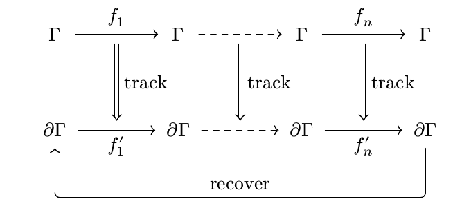
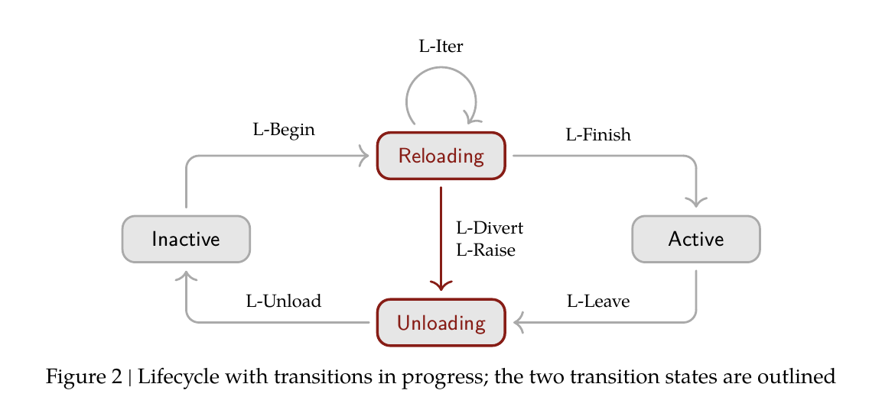

Cordis: Revertible Effects and Reactive Coeffects — a Formal Substrate for Self-Modifying Agent Harnesses
TL;DR
- "A Programming Paradigm for Spatiotemporal Composability" (Yifan Shi, Wei Zhang, Tianyi Cui — Peking University & DeepSeek-AI; an 88-page PDF at github.com/cordiverse/paper, not on arXiv) gives dynamic composition — loading, unloading, and replacing components in a running process — a formal foundation along two axes: temporal composability via revertible effects (every context transformation carries an inverse the runtime tracks and composes) and spatial composability via reactive coeffects (components declare dependencies; every context change is classified against that declaration as activating, deactivating, or neutral).
- The two mechanisms unify into a single recursive context type and a calculus of dynamic composition with ten rules and real metatheory: recovery exactness (removing a component withdraws its contribution and nothing else, even interleaved with other components' steps), dependency ordering, resolution coherence, progress with an explicit step bound, and the centerpiece — confluence: a system that has been through any history of load/unload/replace cycles quiesces at the state that assembling the final configuration from scratch would have produced.
- Implemented as Cordis (TypeScript): one mutation primitive
ctx.effect, a declarative component loader with configuration reconciliation, and transactional hot module replacement. Validation is the Koishi chatbot framework — 4000+ community plugins over 4 years (on Cordis v3; the paper presents the redesigned v4). The stated motivating application is self-evolving agent harnesses, and it landed the same day as DeepSeek Harness v0.1's "everything is a plugin" announcement — though the paper never names Harness.
Why this matters
Every harness-evolution paper in this tracker is about deciding what to change — which prompt, tool, or middleware edit to accept. Almost none are about the substrate that makes the change safe to apply to a live process. The paper's motivation section (1.2.2) states the failure mode precisely: without temporal composability, each self-modification forces a full restart that discards process-local state (caches, sessions, in-flight tasks), and "a faulty self-modification can disable the very process needed to recover"; without spatial composability, naive code replacement "may silently break dependents or introduce circular dependencies that surface only at reload time." Its evidence that mainstream plugin systems lack this: among VSCode's top-100 extensions, 87 contain executable code and so require restarting the whole extension host to remove, and only 7 declare dependencies on other extensions (Marketplace data, June 9, 2026). The standard workaround — OS processes and container orchestrators — supplies both properties only at process/service granularity, exactly wrong for an agent editing its own tools mid-episode. The motivation cites OpenAI's "Harness Engineering" and Anthropic's harness-design posts: a PL-theory paper aimed squarely at agent infrastructure.
The core idea
Classical effect systems (Moggi's monads, algebraic effects) and coeffect systems (comonadic/graded contexts) describe what a computation does to and needs from its environment — but statically, over lexically fixed scopes. The paper's move is to reify both as runtime mechanisms.
Revertible effects. Side effects on a context \(\Gamma\) live in the monoid of transformations \(\Gamma \to \Gamma\). To make them undoable, pair the context with an accumulator of inverses — the effect context
where \(\gamma\) is the current state, \(f\) a forward transformation, \(g\) its (left) inverse, and \(\varphi\) the composite of all inverses so far — the soundness invariant is \(\varphi(\gamma) = \gamma_0\). Tracking is a monoid homomorphism (Theorem 5), so the inverse of any composite follows by composition: an author supplies an inverse per atomic effect and all teardown is derived, never hand-written. Witnessed effect functions \(\mathfrak{E}^*_\Gamma\) choose their inverse per state, the witness condition \(g(\delta)=\gamma\) tying each inverse to the state its application produced — what lets one effect be undone while others stay in place.

Diagram from Section 3.1.1 of the paper: tracked effects \(f_1,\dots,f_n\) lift to \(\partial\Gamma\); applying recover afterwards carries the effect context back to where it began.
Reactive coeffects. Dependencies are a typed key-value context \(\Sigma := (k:K) \rightharpoonup \mathcal{V}_k\); a component declares a specification \(d \subseteq K\), satisfied when \(\sigma \vDash d := \forall k \in d.\; k \in \mathrm{dom}(\sigma)\). All mutations of \(\Sigma\) pass through effect functions, so every change to satisfaction is observed and classified:
Activation runs the component's effects (fully tracked); deactivation applies its accumulator. The synergy is literal: coeffect provision (set) is an effect, so registrations revert for free. Isolation realms (same key, different values in different subtrees) and interception (metadata on dependency access — the hook for capability-style access control) extend the flat table.
Unification. Both live in one recursive context type \(\Gamma_\infty := \mu\Gamma.\; \Gamma \times (\Gamma \to \Gamma) \times \Sigma\). An observational equivalence built from per-key indistinguishability supplies independence: operations at distinct keys always commute (Theorem 40), and at commutative keys any two components' effects are independent (Theorem 42) — so inverses can run in any order, not just LIFO (Corollary 21). Effects carry the commuting part of a computation; coeffects carry the order-sensitive part, ordered provider-before-consumer.
How it works
A component is a triple \((d, p, e)\) — declared dependencies, declared provisions, witnessed effect function. An instantiation is a fiber with a lifecycle state machine: Inactive → Reloading (iterating the effect, one inverse per step) → Active, and down through Unloading, whose exit is guarded by \(\neg\mathrm{relied}_n(\gamma)\): a provider's withdrawal takes effect only after every dependent that resolved a key to it has finished its own teardown — during which it can still read the dependency (closing a connection pool needs the pool). Effects are effect iterators (reified delimited continuations, mapping onto yield), so a transition can be diverted at any iteration boundary, rolling back only the iterations taken; a raising iteration routes through Unloading like any deactivation, leaving the failed fiber Inactive with an error outcome, its siblings untouched.

Figure 2 from the paper: the fiber lifecycle with transitions in progress; Reloading and Unloading are the in-flight states, and L-Divert/L-Raise are the early exits from an activation.
The implementation's core loop (compressed from the paper's Algorithms 1, 3, 5):
# Cordis runtime: reactive lifecycle with effect tracking
on coeffect change (set/unset of key k): # notify, Alg. 3
for each fiber whose declared keys include k:
refresh(fiber)
refresh(fiber):
target <- resolve fiber's declared keys against ACTIVE providers
if target == fiber.target: return # neutral change
fiber.target <- target
if fiber in transition: return # inertia: land first
if target != BOTTOM: state <- LOADING; spawn reload(fiber)
else: state <- UNLOADING; spawn unload(fiber) # stops providing now
reload(fiber):
commit resolved view; dispose <- id
for each step of fiber.apply (effect iterator): # execute, Alg. 1
(inverse, done) <- next step
dispose <- inverse . dispose # LIFO accumulator
if target changed: break # divert at boundary
if target still matches: state <- ACTIVE; notify(provided keys)
else: state <- UNLOADING; chain unload(fiber)
unload(fiber):
await every notified dependent reaching INACTIVE # guard on L-Unload
await dispose(); discard committed view
if target == BOTTOM: state <- INACTIVE
else: chain reload(fiber) # replacement, no restart
Above the core sits the component loader: an orchestrator writes a declarative configuration tree (entries: id, url, config, isolate, intercept, disabled), and the loader reconciles changes with the least disruptive operation per field. The HMR engine applies the same pattern at module granularity: classify changed modules, detect stale entries, then a transactional reload that backs up module caches and, on any import failure, restores them and rebuilds every stale entry from backup — "the system never enters a half-reloaded state."
Results
This is a theory-plus-systems paper; the evidence is metatheory and a production case study, not benchmarks.
- Metatheory (all proved): Preservation (Thm 59); Recovery exactness (Thm 61) — for pairwise-independent components, applying fiber \(n\)'s accumulator at step \(u\) yields \(g_n^u(\gamma^u) \approx (\Psi^{t_l} \circ \cdots \circ \Psi^{t_1})(\gamma^b)\), the state the other fibers' interleaved steps \(t_1<\dots<t_l\) alone would have produced from the episode's start \(\gamma^b\) — removal deletes exactly one component's contribution from history; Ordering (Thm 63); Resolution coherence (Thm 64) — no transition straddles two dependency resolutions; Progress (Thm 66) — no deadlock, termination with steps per fiber bounded by \(S(n) \le (K{+}4)(V(n){+}1)\), \(K\) bounding iterations and \(V(n)\) target-view turns.
- Confluence (Thm 73), under pairwise independence, acyclic dependencies, totality of provisions, and no failed fibers: the quiescent state is reached, up to observational equivalence and renaming, by a canonical sequence — each surviving component loaded exactly once, in dependency order, and none ever unloaded; and any two schedules from the same inputs agree. The paper's gloss: this "licenses reasoning about a Cordis application as though it were statically assembled." Failure is excluded honestly — a raise is genuine divergence — but a failed fiber's contribution to the state is nothing (Cor 62).
- Koishi case study: the server bot and its browser web console are two independent Cordis applications in which every feature is a plugin; orchestrators disable plugins from the console with effects withdrawn in place; HMR re-applies edited plugins on save while preserving caches and live connections elsewhere; switching a storage backend reactivates only the dependents whose resolved dependency changed; a plugin with a missing dependency stays inactive without erroring — across 4000+ independently authored plugins. The paper's own threats-to-validity: single ecosystem and language, observational rather than controlled, no overhead measurements, and Koishi runs Cordis v3 while the paper formalizes v4.
How it connects
- [DeepSeek Harness v0.1] (added today): announced the same day, "powered by the Cordis meta-framework" with models, tools, skills, sessions, sandboxes, loops, and UI all as plugins per @deepseek_ai; the Cordis README points its documentation at the DeepSeek Harness docs site. The paper never mentions Harness — the depth of the dependency is inferred from the announcements.
- [Living-Harness] (living-harness) is the consumer this substrate is built for: a harness that self-modifies while running needs exactly what Cordis proves — replace a component without restarting, revert a bad edit without the process ever being unrecoverable.
- [HarnessCompass] (harnesscompass-guided-evolution) disciplines which harness edits to accept; Cordis is the orthogonal runtime layer making any accepted edit transactionally applicable and exactly revertible — a HarnessCompass loop over a Cordis harness could roll back a regressing component instead of rebuilding from seed.
- [Rethinking Harness Evolution] (added today) argues much of harness-evolution's measured gain is repeated sampling in disguise — an attack on the search. Cordis addresses the other axis entirely: not making the search smarter, but making modification safe. The two critiques compose: even if evolution is mostly sampling, the samples still have to be applied to a live system.
- [Reliable Self-Evolving Agents] (reliable-self-evolving-agents) surveys safety of self-evolution at the policy level; Cordis's confluence theorem is the strongest mechanism-level safety statement in this tracker — dynamic history leaves no trace — though only under assumptions (below) that its threat models should stress.
- [Prime Agent], the open continually-self-improving harness, is the natural adoption test: its component swaps are today coarse-grained restarts — the granularity mismatch Section 1.2.3 diagnoses.
Critical take
The theorems are real but conditional, and the conditions are exactly where agent-written components will bite. First, the runtime never verifies that a supplied inverse actually inverts: Section 5.1.1 is explicit that the witness "is an obligation on the component author rather than a property the runtime verifies." Confluence assumes every inverse is correct; an LLM that writes a plausible-but-wrong dispose gets the guarantees vacuously. Second, pairwise independence requires commutative keys — and the paper concedes ordered structures (middleware chains, allocator handles compared by address) are not commutative; plugins that stack interceptors are the order-sensitive case the metatheory pushes onto coeffect declarations. Third, the system-boundary discussion quietly bounds the enterprise: effects that emit across the boundary (network sends, visible file writes — i.e., most agent tool calls) can only be withheld or compensated, and the paper admits the metatheory "has to be re-established" for compensation. Revertibility governs the harness's wiring, not the world's state. Fourth, the evidence gap: Koishi validates v3 while the paper formalizes v4; no overhead numbers for effect tracking (each iteration allocates a closure holding its inverse — Section 6.7's proposed compiler co-design is an admission it costs something); and the case study is existence-and-adoption, by the authors' own framing. Fifth, the DeepSeek Harness link is publicly a breadcrumb trail (announcement adjacency, a docs URL), not a documented architecture claim — whether Harness actually runs on Cordis, and how its KV-cache-aware append-only design (per @eliebakouch's thread) interacts with revertible effects, is unverified. None of this diminishes what the paper is: the first serious attempt to make "the agent edits its own harness without bricking itself" a theorem rather than a hope.
If you remember three things
- Teardown should be derived, not written: pair every atomic effect with an inverse, track inverses in the context \(\partial\Gamma = \Gamma \times (\Gamma\to\Gamma)\), and composite teardown follows by composition — recovery exactness proves removal withdraws one component's contribution and nothing else, even interleaved with everything else.
- Confluence is the license for live self-modification: any history of load/unload/replace cycles quiesces at the state a from-scratch assembly of the final configuration would produce — but only under correct inverses, commutative keys, acyclic dependencies, and no failures.
- The guarantees stop at the system boundary and at the author's honesty: emissions can only be compensated (metatheory not yet re-established), and inverse correctness is unchecked — the two open problems that matter most for agent-written plugins.